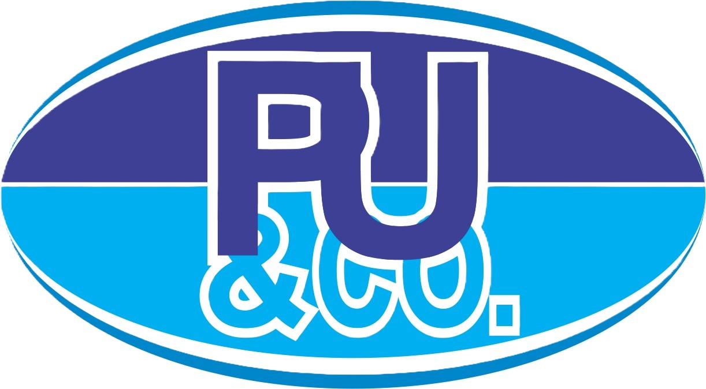

<aside
  id="main-navigation"
  class="sidebar"
  [class.collapsed]="collapsed"
  [class.mobile-open]="mobileOpen"
>

  <div class="sidebar-brand">

    <!-- <div class="brand-mark"> -->
      
        <!--  -->
        
      
    <!-- </div> -->

    <div>
      <strong>ExecTrack</strong>
      <span>Executive Platform</span>
    </div>

    <button
      class="sidebar-collapse-toggle"
      type="button"
      [attr.aria-label]="collapsed ? 'Expand sidebar' : 'Collapse sidebar'"
      [attr.aria-expanded]="!collapsed"
      (click)="toggleSidebar.emit()"
    >
      <i
        class="fa-solid"
        [class.fa-angles-right]="collapsed"
        [class.fa-angles-left]="!collapsed"
        aria-hidden="true"
      ></i>
    </button>

    <button
      class="sidebar-close"
      type="button"
      aria-label="Close navigation"
      (click)="closeMobile.emit()"
    >
      <i class="fa-solid fa-xmark" aria-hidden="true"></i>
    </button>


  </div>

  <nav>

  <div class="nav-section">

    <span class="nav-label">
      Workspace
    </span>

    @for (item of navigation; track item.route) {

      @if (isVisible(item)) {

        <a
          [routerLink]="item.route"
          routerLinkActive="active"
          [routerLinkActiveOptions]="{ exact: item.route === '/dashboard' }"
          class="nav-item"
          (click)="closeMobile.emit()"
        >
          <span class="nav-icon">
            <i [class]="item.icon" aria-hidden="true"></i>
          </span>

          <span class="nav-text">
            {{ item.label }}
          </span>
        </a>

      }

    }

  </div>

  @if (isAdministrationVisible()) {

    <div class="nav-section admin-section">

      <span class="nav-label">
        Administration
      </span>

      @for (item of adminNavigation; track item.route) {

        @if (isVisible(item)) {
          <a
            [routerLink]="item.route"
            routerLinkActive="active"
            class="nav-item"
            (click)="closeMobile.emit()"
          >
            <span class="nav-icon">
              <i [class]="item.icon" aria-hidden="true"></i>
            </span>

            <span class="nav-text">
              {{ item.label }}
            </span>
          </a>
        }

      }

    </div>

  }

</nav>


  <div class="sidebar-footer">

    @if (authService.currentUser(); as user) {
      <div class="mobile-profile">
        <button
          class="mobile-profile-trigger"
          type="button"
          aria-label="Open profile menu"
          [attr.aria-expanded]="mobileProfileOpen"
          (click)="mobileProfileOpen = !mobileProfileOpen"
        >
          <span class="mobile-avatar">{{ authService.getInitials(user) }}</span>
          <span class="mobile-profile-details">
            <strong>{{user.title}} {{ user.firstName }} {{ user.lastName }}</strong>
            <small>{{ user.role }}</small>
          </span>
        </button>

        @if (mobileProfileOpen) {
          <button
            class="mobile-logout-button"
            type="button"
            (click)="logout()"
          >
            Logout
          </button>
        }
      </div>
    }

    <!-- <div class="sidebar-meta">
      <span>ExecTrack</span>
      <small>Phase 1 MVP</small>
    </div> -->

  </div>

</aside>